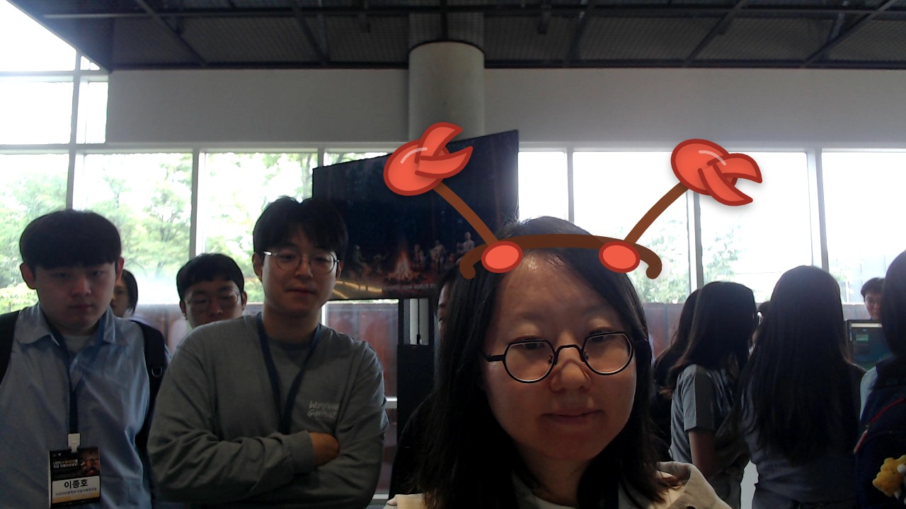

DA EUN SUNG
STUDENT
MOTTOHAPPY LIFE
DA EUN SUNG — SNU 학생의 기록 공간
About me
SNU STUDENT
What I do
AI-written bio
SNU에서 공부하는 학생 DA EUN SUNG입니다. 배움과 일상의 생각을 GitHub 스타일 블로그에 차분히 정리합니다.
AI first impression
차분하고 친근한 분위기이며, 블로그 프로필에 어울리는 자연스러운 순간입니다.